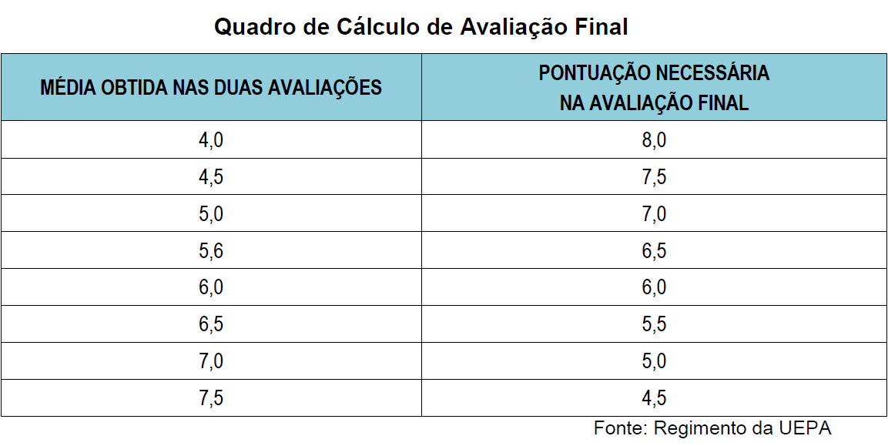
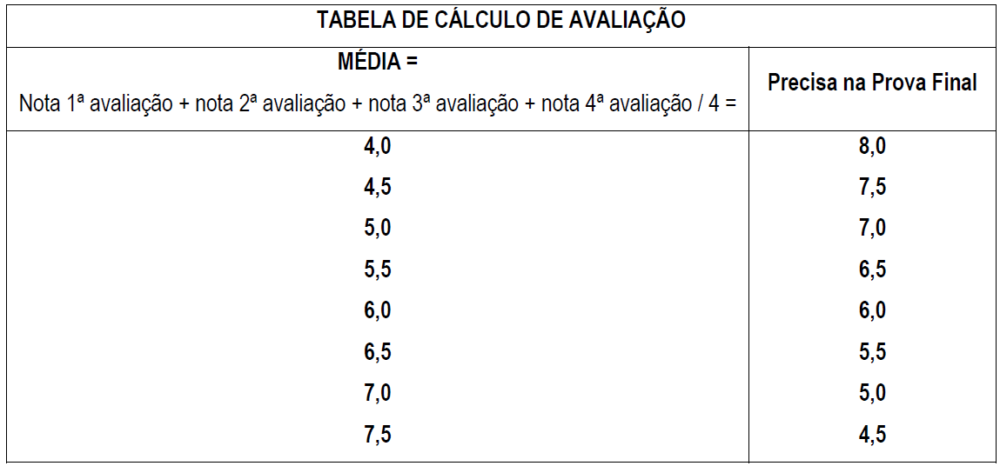

Sistema de Avaliação da UEPA
A avaliação da aprendizagem é realizada presencialmente por meio de duas avaliações intervalares e uma avaliação final quando necessária.
Os discentes que obtiverem a soma das notas das 1ª e 2ª avaliações maior ou igual a 8,0 (oito) estarão aprovados sem necessidade de realizar a avaliação final. Os que obtiverem a soma das notas das 1ª e 2ª avaliações entre 4,0 (quatro) e 7,5 (sete e meio) deverão realizar a avaliação final. Os discentes que obtiverem nas duas primeiras avaliações média abaixo de 4,0 (quatro) serão considerados reprovados.
O cálculo da nota necessária na avaliação final é feito com base no quadro abaixo.
O processo de ensino-aprendizagem será desenvolvido de acordo com o que prevê o Regimento Geral da UEPA. A avaliação é uma tarefa didática necessária e permanente do trabalho docente que deve acompanhar passo a passo o processo de ensino e aprendizagem. A avaliação do processo de ensino –aprendizagem deverá ser realizada individualmente, cada um fazendo sua própria reflexão e, em conjunto, os professores e alunos, objetivando identificar os progressos e dificuldades no ensino-aprendizagem, assim como reorientar as ações educativas. A avaliação deve cumprir sua função auto-analise e a busca de novos caminhos para o prosseguimento do processo de construção do conhecimento.
A avaliação do desempenho dos alunos será efetivada, obrigatoriamente, mediante a realização de 04(quatro) avaliações e com freqüência obrigatória de 75%, vedado o abono de faltas, salvo nos casos previstos em lei. Caso não consiga aprovação por média, o aluno deverá ser submetido à avaliação final.
